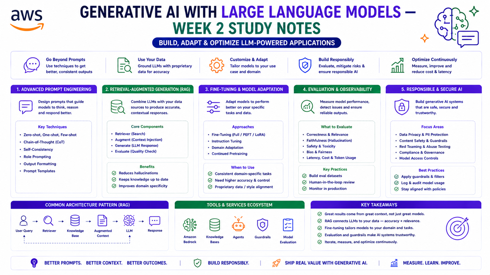

Generative AI with Large Language Models — Week 2 Study Notes
Course: AWS & DeepLearning.AI (Coursera) | Focus: Fine-tuning, Evaluation, PEFT and LLM Optimisation
Learning in Public — Study notes from a 24-week Generative AI course, written from an infrastructure engineer's perspective.

1. The GenAI Project Lifecycle
The lifecycle maps out every stage from idea to production deployment.
1. Scope → Define what the LLM needs to do (narrow = cheaper)
2. Select Model → Existing foundation model or train from scratch
3. Adapt & Align → Prompt engineering → Fine-tuning → RLHF (iterative)
4. Evaluate → Metrics, benchmarks, human evaluation
5. Deploy & Optimise → Quantisation, distillation, pruning
6. Augment → RAG, agents, tool use (overcome LLM limitations)| Stage | Complexity | Typical Duration |
|---|---|---|
| Pre-training | Very High | Months |
| Prompt Engineering | Low | Days |
| Fine-tuning | Medium | Days to weeks |
| RLHF | Medium-High | Weeks (depends on human feedback availability) |
| Optimisation | Medium | Days |
2. In-Context Learning (ICL)
Teaching the model via examples in the prompt — no weight updates.
| Type | Description | Example |
|---|---|---|
| Zero-shot | No examples — just instruction | "Classify sentiment: [text]" |
| One-shot | One example provided | One labelled example + new input |
| Few-shot | Multiple examples (2–5) | Multiple labelled examples + new input |
3. Prompt Engineering vs Prompt Tuning
| Prompt Engineering | Prompt Tuning | |
|---|---|---|
| What changes | The language/wording of the prompt | Trainable embedding vectors (soft prompts) |
| Training required | No | Yes — supervised learning |
| Human-readable | Yes | No — vectors, not words |
| Cost | Low | Medium |
| Performance | Good for large models | Approaches fine-tuning for large models |
Hard Prompts vs Soft Prompts
- Hard prompts — human-written text, interpretable, flexible. Used in prompt engineering.
- Soft prompts — learned embedding vectors prepended to the input. Same length as token embeddings. Task-specific. Not interpretable. Trained end-to-end.
4. Fine-Tuning
Supervised learning that updates model weights using labelled examples. Uses a much smaller dataset than pre-training (hundreds to thousands of examples vs billions of tokens).
4a. Instruction Fine-Tuning
Trains the model to follow instructions rather than just predict next tokens. Uses prompt-completion pairs. Improves generalisation across tasks. Dataset is instruction-formatted examples — much smaller than pre-training data.
4b. Single-Task Fine-Tuning
Fine-tune on only one task (e.g. sentiment analysis, summarisation). Can achieve good results with just 500–1,000 examples.
Catastrophic Forgetting
The model forgets how to do other tasks because full fine-tuning modifies all weights. Example: after fine-tuning for sentiment analysis, the model may lose its ability to do named entity recognition — it knew how before fine-tuning.
How to avoid it:- Multi-task fine-tuning — train on 50,000–100,000 examples across many tasks simultaneously
- PEFT — only update a small subset of weights, preserving original model capabilities
4c. Multi-Task Instruction Fine-Tuning
Fine-tune on many tasks at once. Requires significantly more data (50k–100k examples). Avoids catastrophic forgetting. FLAN models (e.g. FLAN-T5) use this approach.
5. PEFT — Parameter-Efficient Fine-Tuning
Full fine-tuning updates every parameter. PEFT updates only 15–20% of parameters (or fewer). Most original weights are frozen.
- Dramatically lower memory requirements (often fits on a single GPU)
- Less prone to catastrophic forgetting
- Small trained weights (~MBs) can be swapped in/out per task — no need to store full model copies
- Multiple task adapters can share one base model
| Category | How It Works | Example |
|---|---|---|
| Selective | Fine-tune a subset of existing parameters (specific layers) | Mixed results — trade-off between parameter and compute efficiency |
| Reparameterisation | Reduce trainable parameters via low-rank transformations | LoRA |
| Additive | Keep original weights frozen, add new trainable components | Adapters, Soft Prompts (Prompt Tuning) |
6. LoRA — Low-Rank Adaptation
The most widely used PEFT technique. Falls under reparameterisation.
How It Works
- Freeze all original model weights
- Inject two small rank-decomposition matrices (A and B) alongside each weight matrix
- Train only the small matrices A and B
- At inference: multiply A × B, add result to frozen original weights, replace in model
Original weight matrix W: dimensions 512 × 64 = 32,768 parameters
LoRA with rank = 8:
Matrix A: 8 × 64 = 512 parameters
Matrix B: 512 × 8 = 4,096 parameters
Total LoRA params: 4,608 parameters
Reduction: 86% fewer trainable parametersKey Properties
- No inference latency increase — same number of parameters as original after merging
- Multiple task adapters — train different A/B pairs per task, swap at inference time
- Typically applied to self-attention layers — where most LLM parameters live
- Rank range 4–32 — good trade-off between reduction and performance. Ranks above 16 show diminishing returns.
7. Model Evaluation Metrics
ROUGE — For Summarisation
ROUGE (Recall-Oriented Understudy for Gisting Evaluation) compares generated summaries to human reference summaries.
Terminology: Unigram = 1 word | Bigram = 2 consecutive words | N-gram = N consecutive words | LCS = Longest Common Subsequence
ROUGE-1 (Unigram)
Generated: "the cat sat on the big red mat" (8 words)
Reference: "the cat sat on the mat" (6 words)
Matches: the, cat, sat, on, the, mat (6 matches — "big" and "red" not in reference)
Recall = matches / reference words = 6/6 = 1.000
Precision = matches / generated words = 6/8 = 0.750
F1 = 2 × (1.000 × 0.750) / (1.000 + 0.750) = 0.857ROUGE-2 (Bigram)
Generated bigrams: the cat, cat sat, sat on, on the, the big, big red, red mat
Reference bigrams: the cat, cat sat, sat on, on the, the mat
Matching bigrams: the cat, cat sat, sat on, on the (4 matches)
Recall = 4/5 = 0.800
Precision = 4/7 = 0.571
F1 = 2 × (0.800 × 0.571) / (0.800 + 0.571) = 0.667ROUGE-L (Longest Common Subsequence)
LCS = "the cat sat on the mat" (length = 6)
Recall = LCS length / reference length = 6/6 = 1.000
Precision = LCS length / generated length = 6/8 = 0.750
F1 (ROUGE-L) = 0.857ROUGE Pitfall — Repetition
Repetition like "cold cold cold cold" can score highly. Fix: apply a clipping function capping unigram matches at their count in the reference. Also note: ROUGE scores are only comparable across the same task — don't compare summarisation ROUGE to translation ROUGE.
BLEU — For Translation
BLEU (Bilingual Evaluation Understudy) evaluates machine translation quality. Key difference from ROUGE: BLEU is precision-based only — it does not consider recall.
Generated: "the cat sat on the big red mat" (8 words)
Reference: "the cat sat on the mat" (6 words)
Unigram precision = 6/8 = 0.750
Bigram precision = 4/7 = 0.571 (the cat, cat sat, sat on, on the — 4 of 7 bigrams match)
BLEU ≈ average of unigram, bigram, trigram, 4-gram precisions| Metric | Measures | Use For |
|---|---|---|
| ROUGE | Recall — how much of the reference is captured | Summarisation |
| BLEU | Precision — how much of the generated text appears in the reference | Translation |
8. Evaluation Benchmarks
For overall model evaluation, use standardised benchmarks rather than task-specific metrics alone:
| Benchmark | Full Name | What It Tests |
|---|---|---|
| GLUE | General Language Understanding Evaluation | Range of NLU tasks |
| SuperGLUE | Super GLUE | Harder NLU — models exceeded human baseline on GLUE |
| MMLU | Massive Multitask Language Understanding | 57 subjects across STEM, humanities, social sciences |
| HELM | Holistic Evaluation of Language Models | 7 metrics: accuracy, calibration, robustness, fairness, bias, toxicity, efficiency |
| SQuAD | Stanford Question Answering Dataset | Reading comprehension + Q&A |
9. Transformer Architecture Quick Reference
| Type | Also Known As | Architecture | Best For | Examples |
|---|---|---|---|---|
| Encoder only | Autoencoding | Bidirectional — sees full sequence | Classification, NER, sentiment | BERT, RoBERTa, DistilBERT |
| Encoder-Decoder | Seq2seq | Encoder processes input, decoder generates output | Translation, summarisation, Q&A | T5, BART |
| Decoder only | Autoregressive | Unidirectional — predicts next token | Text generation, chatbots | GPT family, LLaMA |
Key Concepts
- Tokenisation — converts raw text to token IDs
- Embeddings — maps token IDs to dense vectors (meaning in vector space)
- Positional encoding — adds position information to embeddings (transformers have no inherent sequence order)
- Self-attention — each token attends to every other token in the sequence
- Multi-head attention — multiple attention mechanisms run in parallel, each learning different relationships
- Cross-attention — decoder attends to encoder output (in encoder-decoder models)
Inference Parameters
| Parameter | Effect |
|---|---|
| Temperature | Controls randomness. Low (0.1) = deterministic. High (1.5) = creative/random. |
| Top-p (nucleus) | Sample from smallest set of tokens whose probabilities sum to p |
| Top-k | Sample from the k most likely tokens only |
| Max tokens | Maximum output length |
| Repetition penalty | Reduces probability of repeating tokens already in output |
10. LLM Optimisation for Deployment
Quantisation — Reduce Memory Footprint
| Format | Bytes per parameter | Notes |
|---|---|---|
| FP32 | 4 bytes | Baseline full precision |
| FP16 | 2 bytes | Half precision |
| BFLOAT16 | 2 bytes | FP16 on steroids — better range, used in training |
| Int8 | 1 byte | Good compression, minimal quality loss |
| Int4 | 0.5 bytes | Aggressive — reduces size and speeds inference |
Other Optimisation Techniques
- Distillation — train a smaller "student" model to mimic a larger "teacher" model
- Pruning — remove low-importance weights (near-zero values) to reduce model size
Distributed Training
| Method | How It Works | When to Use |
|---|---|---|
| DDP (Distributed Data Parallel) | Full model replicated on each GPU | Model fits on single GPU |
| FSDP (Fully Sharded Data Parallel) | Model sharded across GPUs | Model too large for single GPU — reduces memory up to 80% |
11. RLHF — Reinforcement Learning from Human Feedback
Aligns the model with human preferences: helpful, harmless, honest (HHH).
1. Collect human feedback on model outputs (rank completions)
2. Train a Reward Model on human rankings
3. Use PPO (Proximal Policy Optimisation) to fine-tune the LLM
→ Maximise reward score while staying close to original model
4. KL Divergence — constrains how far the updated policy can deviate
from the reference model (prevents catastrophic forgetting)- PPO (Proximal Policy Optimisation) — the "proximal" refers to a constraint that limits the distance between old and new policy, preventing large, destabilising weight updates.
- KL Divergence — measures difference between two probability distributions. Used in PPO to ensure the fine-tuned LLM doesn't drift too far from the original.
Constitutional AI (RLAIF)
AI-generated feedback instead of human feedback. Reduces cost of RLHF.
- Red teaming — prompt model to generate harmful responses
- Critique — model critiques its own harmful output using constitutional principles
- Revision — model revises output to be safe
- Use revised outputs to train the reward model (replacing human feedback)
Constitutional principles = a short text file with rules the model should follow (analogous to a constitution for the AI's behaviour).
12. Advanced Techniques — Overcoming LLM Limitations
RAG — Retrieval-Augmented Generation
Overcomes hallucination by retrieving relevant context from an external knowledge base and providing it to the model as additional input.
User query → Retriever → External knowledge base → Retrieved context
↓
LLM generates answer
grounded in retrieved factsReAct — Reasoning + Acting
Framework combining reasoning traces and action steps. The model reasons about which action to take, takes the action (e.g. search, calculate), observes the result, reasons again. Interleaves reasoning and acting to solve multi-step problems that require external tools.
Chain of Thought Prompting
Include step-by-step reasoning in the prompt to guide the model through complex reasoning tasks. Improves performance on maths, logic, and multi-step problems.
PAL — Program-Aided Language Models
Model generates code to solve problems rather than reasoning in natural language. The code is executed and the result returned.
LangChain
Framework for building LLM-powered applications. Chains together prompts, models, memory, tools, and agents. Memory in LangChain stores conversation history to maintain context across turns.
13. Responsible AI
| Issue | Description |
|---|---|
| Hallucination | Model generates false or fabricated information confidently |
| Toxicity | Harmful, offensive, or dangerous outputs |
| Bias | Reflects and amplifies biases present in training data |
| Fairness | Inconsistent performance across demographic groups |
| IP/Copyright | Model may reproduce copyrighted training data |
Quick Reference — Key Formulas
ROUGE-1 Recall = unigram matches / reference unigrams
ROUGE-1 Precision = unigram matches / generated unigrams
ROUGE-1 F1 = 2 × (Recall × Precision) / (Recall + Precision)
ROUGE-L = uses LCS length in place of unigram matches
BLEU = average precision across n-gram sizes 1 to 4
LoRA param reduction example (rank=8, W=512×64):
Original W: 32,768 params
LoRA A+B: 4,608 params → 86% reduction
Quantisation memory (7B parameter model):
FP32: 7B × 4 bytes = 28 GB
FP16: 7B × 2 bytes = 14 GB
Int8: 7B × 1 byte = 7 GB
Int4: 7B × 0.5B = 3.5 GBKey Distinctions to Remember
| Comparison | Left | Right |
|---|---|---|
| Fine-tuning vs Prompt Tuning | Updates model weights using labelled data | Trains soft prompt vectors only — model weights stay frozen |
| ROUGE vs BLEU | Recall-based. How much of the reference is captured. Use for summarisation. | Precision-based. How much of the generated text appears in the reference. Use for translation. |
| LoRA vs Full Fine-tuning | 86% fewer trainable parameters, same inference latency, task adapters swappable | All weights updated, full model copies per task, higher memory cost |
| Training params vs Inference params | Learned weights and biases — not changed at inference | Temperature, top-p, top-k — set at runtime, not learned |
| RLHF vs Constitutional AI | Uses human feedback to train reward model | Uses AI-generated feedback guided by written principles — cheaper and more scalable |
The Core Lesson
"Full fine-tuning is rarely the right first move. Start with prompt engineering — zero cost, immediate feedback. If the model needs task-specific improvement, LoRA gives you 86% fewer trainable parameters with minimal performance loss and full inference compatibility. The goal is the smallest intervention that achieves the required behaviour — because smaller interventions are cheaper, faster to iterate, and preserve what the model already knows."